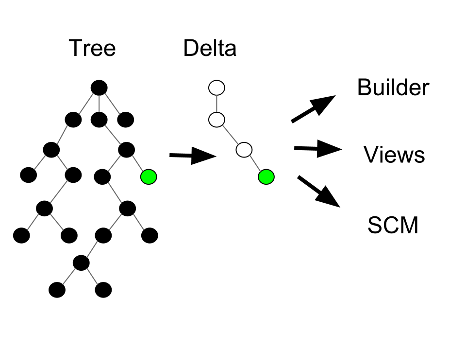
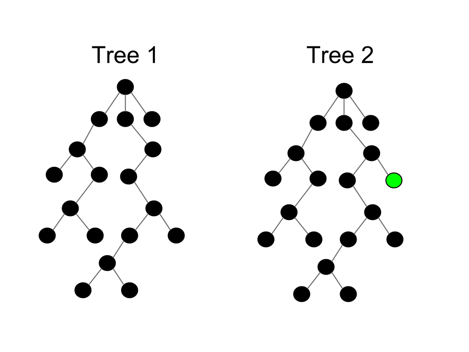
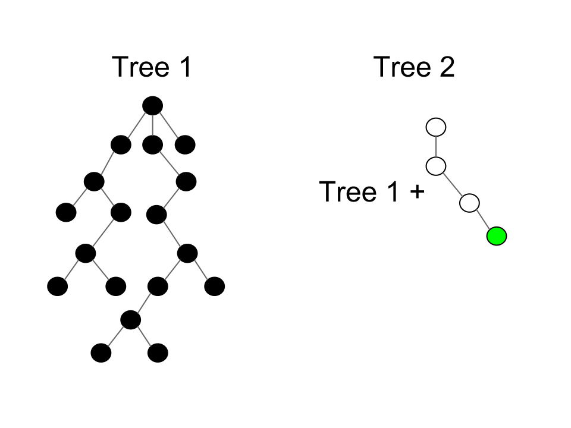

Eclipse SDK's Greatest Hits:
The First Ten Years
John Arthorne
March, 2012
Disclaimer
- These may not be the greatest hits
- Just some deep Eclipse implementation details that I think are cool, from my limited perspective
- This presentation contains code

Source: http://www.flickr.com/photos/cara_vsangel/
What we're going to look at
- Workspace tree representation
- Incremental Java build
- SWT source tree
- RCP refactoring
- Command dispatcher
- p2 resolver
Workspace tree representation
It's ElementTree my dear Watson, ElementTree
ElementTree motivation
- Typical edit/compile/deploy cycle for a developer focuses on a small segment of a potentially very large code base
- Want to aggressively optimize for this common cycle: make performance cost proportional to the change, rather than to the size of the workspace
- Create and manipulate “units of change” that are passed around to interested parties
Data flow

Additional observations
- Clients want a delta of the workspace state between two moments in time
- Different clients may want deltas with different start and/or end points
- May need to keep track of hundreds of tree states at once
- How to efficiently represent all these different deltas in memory?
- How to compute these deltas without traversing entire workspaces?
Representing two tree states

Representing tree states as deltas

More details
- Have only one complete tree, and represent all others as deltas
- Only one delta is mutable - representing current operation
- Immutability allows trees to share common parent and nodes to share children
- Each tree seems complete when traversing using API, but internal structure quite different
- Most common scenarios are nearly constant-time delta computation
Lessons learned
- Not all optimization is a speed-space tradeoff. Here we greatly reduced space required to represent states, and made delta calculation very fast
- Textbook data structures work very well in most programming situations, but sometimes a very specialized structure is called for
- Internal representation of a data structure can be radically different from external appearance
Incremental Java build
Conducts a trial on a single compilation unit. Returns true if the unit is guilty. The sentence is compilation without possibility of parole.
The fix is to avoid the workaround.
Platform fidelity vs portability
- Java emphasises portability of application code.
- Technique 1: lowest common denominator in native code, Or, native implementation is avoided and platform fidelity is lost.
- Different native implementations used to fulfill common Java API contract
Performs arbitrary actions when the event loop crashes.
Okay. Have a seat. Relax a while. This is going to be a bumpy ride.